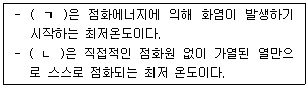
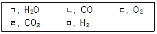
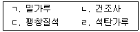
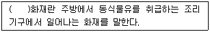
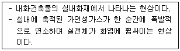
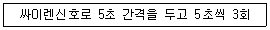
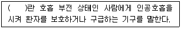
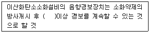
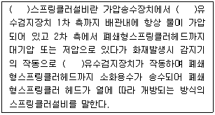

경비지도사-2차(소방학) (2019-11-16 기출문제)
1. 위험물안전관리법령상 위험물의 유별 성질에 관한 설명으로 옳은 것은?
- 제1류는 산화성 액체이다.
- 제2류는 가연성 액체이다.
- 제4류는 자연발화성 물질이다.
- 제5류는 자기반응성 물질이다.
(정답률: 67%)

2. 목조건축물의 일반적인 화재특성에 관한 내용으로 옳은 것은?
- 습도가 높을수록 연소확대는 빠르다.
- 종방향보다는 횡방향의 화재성장이 빠르다.
- 저온장기형 화재이다.
- 바람의 세기가 클수록 연소확대가 빠르다.
(정답률: 70%)
3. 마그네슘 금속분과 숯의 일반적인 연소형태로 옳은 것은?
- 증발연소
- 분해연소
- 표면연소
- 자기연소
(정답률: 59%)
4. 다음은 연소에 관한 내용이다. ( )에 알맞은 것은?

- ㄱ: 인화점, ㄴ: 발화점
- ㄱ: 인화점, ㄴ: 연소점
- ㄱ: 발화점, ㄴ: 인화점
- ㄱ: 발화점, ㄴ: 연소점
(정답률: 67%)
5. 다음 중 점화원이 아닌 것은?
- 중합열
- 산화열
- 기화열
- 분해열
(정답률: 60%)
6. 다음 중 메탄(CH4)과 산소의 완전연소에서 최종 생성되는 물질의 종류를 모두 고른 것은?

- ㄴ
- ㄱ, ㄹ
- ㄷ, ㄹ, ㅁ
- ㄱ, ㄴ, ㄷ, ㅁ
(정답률: 67%)
7. 굴뚝효과(Stack Effect)의 주된 영향요인이 아닌 것은?
- 건축물의 내ㆍ외 온도차
- 건축물의 높이
- 건축물의 바닥면적
- 건축물 외벽의 기밀도
(정답률: 73%)
8. 복사에 의한 열전달과 관계있는 것은?
- 뉴톤(Newton)의 법칙
- 푸리에(Fourier)의 법칙
- 패러데이(Faraday)의 법칙
- 스테판-볼츠만(Stefan-Boltzmann)의 법칙
(정답률: 70%)
9. 분진폭발이 발생할 수 있는 물질을 모두 고른 것은?

- ㄱ, ㄴ
- ㄱ, ㄹ
- ㄴ, ㄷ
- ㄷ, ㄹ
(정답률: 알수없음)
10. 아세틸렌가스를 압축하거나 가열할 때 일어날 수 있는 폭발은?
- 분진폭발
- 분해폭발
- 분무폭발
- 중합폭발
(정답률: 60%)
11. 위험물안전관리법령상 제4류 위험물 운반용기의 외부에 표시하여야 하는 주의사항은? (단, 운반용기의 용적은 100리터 임)
- 물기엄금
- 충격주의
- 화기엄금
- 가연물접촉주의
(정답률: 알수없음)
12. 위험물안전관리법령상 위험물 품명과 지정수량의 연결이 옳은 것은?
- 유황 – 200킬로그램
- 나트륨 - 50 킬로그램
- 적린 – 100킬로그램
- 질산 - 500 킬로그램
(정답률: 70%)
13. 피난계획의 일반적인 원칙으로 옳지 않은 것은?
- 피난설비는 쉽게 조작할 수 있어야 한다.
- 피난동선은 2방향 이상 확보한다.
- 피난설비는 이동식을 원칙으로 한다.
- 피난경로는 단순명료하게 한다.
(정답률: 70%)
14. 이산화탄소 소화약제의 주된 소화효과는?
- 질식
- 억제
- 냉각
- 제거
(정답률: 알수없음)
15. 소화 후 오염의 피해가 적어 박물관, 미술관, 통신기기실의 화재에 적합한 소화약제는?
- 강화액
- 할론
- 포
- 분말
(정답률: 73%)
16. 화재안전기준(NFSC)상 화재에 관한 내용이다. ( )에 알맞은 것은?

- K급
- D급
- E급
- B급
(정답률: 64%)
17. 소화에 관한 설명으로 옳지 않은 것은?
- 연소의 3요소 중 어느 하나라도 제거하면 화재는 소화된다.
- 부촉매소화는 물리적인 소화방법이다.
- 가연성기체의 농도가 연소범위를 벗어나면 연소는 일어나지 않는다.
- 가연성기체의 분출화재 시 밸브를 잠가서 제거소화한다.
(정답률: 70%)
18. 화재예방, 소방시설 설치ㆍ유지 및 안전관리에 관한 법령상 분말소화기의 내용연수는?
- 5년
- 10년
- 15년
- 20년
(정답률: 60%)
19. 다음에서 설명하고 있는 것은?

- Boil over
- Roll over
- Slop over
- Flash over
(정답률: 70%)
20. 화재안전기준(NFSC)상 소화약제인 IG - 541의 구성성분이 아닌 것은?
- 질소
- 네온
- 아르곤
- 이산화탄소
(정답률: 59%)
21. 소방기본법령상 다음에 해당하는 소방신호는?

- 경계신호
- 발화신호
- 해제신호
- 훈련신호
(정답률: 알수없음)
22. 화재안전기준(NFSC)상 광원점등식의 피난유도선 설치기준으로 옳지 않은 것은?
- 구획된 각 실로부터 주출입구 또는 비상구까지 설치할 것
- 수신기로부터의 화재신호 및 수동조작에 의하여 광원이 점등되도록 설치할 것
- 바닥에 설치되는 피난유도 표시부는 매립하는 방식을 사용할 것
- 피난유도 표시부는 바닥으로부터 높이 1.5m이하의 위치 또는 바닥 면에 설치할 것
(정답률: 67%)
23. 화재안전기준(NFSC)상 인명구조기구에 관한 내용이다. ( )에 알맞은 것은?

- 방화복
- 방열복
- 공기호흡기
- 인공소생기
(정답률: 67%)
24. 건축법상 건축물의 주요구조부가 아닌 것은?
- 보
- 기둥
- 내력벽
- 최하층 바닥
(정답률: 75%)
25. 화재안전기준(NFSC)상 옥외소화전 노즐선단에서의 방수량 기준은?
- 130ℓ/min 이상
- 230ℓ/min 이상
- 300ℓ/min 이상
- 350ℓ/min 이상
(정답률: 64%)
26. 건축물의 피난ㆍ방화구조 등의 기준에 관한 규칙상 벽에 관한 내화구조 기준에 해당하는 것은? (단, 외벽 중 비내력벽은 제외함)
- 벽돌조로서 두께가 19센티미터 이상인 것
- 철골철근콘크리트조로서 두께가 8센티미터 이상인 것
- 경량기포 콘크리트블록조로서 두께가 8센티미터 이상인 것
- 철재로 보강된 콘크리트블록조ㆍ벽돌조 또는 석조로서 철재에 덮은 콘크리트블록등의 두께가 3센티미터 이상인 것
(정답률: 64%)
27. 정전기발생 방지대책으로 옳은 것은?
- 접지 본딩을 한다.
- 물체 간에 마찰과 충격을 많이 준다.
- 상대습도를 50 % 이하로 낮게 한다.
- 대전방지를 위해 비전도성물질을 사용한다.
(정답률: 67%)
28. 화재안전기준(NFSC)상 소방대상물의 설치장소별 피난기구의 적응성 중 노유자시설 2층에 설치해야 할 피난기구가 아닌 것은?
- 구조대
- 피난교
- 공기안전매트
- 다수인피난장비
(정답률: 67%)
29. Fool Proof 원칙이 아닌 것은?
- 2방향 이상의 피난통로를 확보한다.
- 문손잡이는 회전식이 아닌 레버식으로 한다.
- 피난기구 사용방법에 그림을 그려 설명한다.
- 피난방향으로 문을 열 수 있도록 한다.
(정답률: 50%)
30. 건축물의 피난ㆍ방화구조 등의 기준에 관한 규칙상 특별피난계단의 구조로 옳지 않은 것은?
- 계단실에는 예비전원에 의한 조명설비를 할 것
- 노대 및 부속실에는 계단실외의 건축물의 내부와 접하는 창문등(출입구를 제외 한다)을 설치하지 아니할 것
- 계단실에는 노대 또는 부속실에 접하는 부분외에는 건축물의 내부와 접하는 창문등을 설치하지 아니할 것
- 출입구의 유효너비는 0.7미터 이상으로 하고 피난의 방향으로 열 수 있을 것
(정답률: 알수없음)
31. 화재안전기준(NFSC)상 이산화탄소소화설비에 관한 내용이다. ( )에 알맞은 것은?

- 10초
- 15초
- 30초
- 1분
(정답률: 59%)
32. 화재안전기준(NFSC)상 비상방송설비에서 실내에 설치하는 확성기의 최소 음성입력기준은?
- 1W
- 3W
- 5W
- 10W
(정답률: 55%)
33. 화재안전기준(NFSC)상 스프링클러설비에 관한 내용이다. ( )에 공통적으로 들어갈 것은?

- 준비작동식
- 부압식
- 건식
- 습식
(정답률: 60%)
34. 화재예방, 소방시설 설치ㆍ유지 및 안전관리에 관한 법령상 물분무등소화설비가 아닌 것은?
- 강화액소화설비
- 미분무소화설비
- 호스릴옥내소화전설비
- 이산화탄소소화설비
(정답률: 40%)
35. 화재안전기준(NFSC)상 옥내소화전설비에서 소화설비의 배관 내 압력변동을 검지하여 자동적으로 펌프를 기동 및 정지시키는 것은?
- 기동용수압개폐장치
- 개폐표시형밸브
- 성능시험배관
- 순환배관
(정답률: 70%)
36. 화재안전기준(NFSC)상 자동화재탐지설비의 음향장치 설치기준으로 옳지 않은 것은?
- 주음향장치는 수신기의 내부 또는 그 직근에 설치할 것
- 지구음향장치는 특정소방대상물의 층마다 설치할 것
- 지구음향장치는 해당 층의 각 부분에 유효하게 경보를 발할 수 있도록 설치할 것
- 지구음향장치는 해당 특정소방대상물의 각 부분으로부터 하나의 음향장치까지의 수평거리가 40 m 이하가 되도록 할 것
(정답률: 60%)
37. 화재안전기준(NFSC)상 스프링클러설비에서 조기반응형 스프링클러헤드를 설치하여야 하는 장소가 아닌 것은?
- 병원의 입원실
- 판매시설의 매장
- 오피스텔ㆍ숙박시설의 침실
- 공동주택ㆍ노유자시설의 거실
(정답률: 55%)
38. 차동식스포트형감지기에서 비화재보를 방지하기 위한 구성요소는?
- 접점
- 리크홀
- 바이메탈
- 다이아프램
(정답률: 60%)
39. 화재안전기준(NFSC)상 사용자의 몸무게에 의하여 자동으로 하강하고 내려서면 스스로 상승하여 연속적으로 사용할 수 있는 무동력 피난기구는?
- 완강기
- 승강식 피난기
- 다수인피난장비
- 하향식 피난구용 내림식사다리
(정답률: 46%)
40. 화재안전기준(NFSC)상 스프링클러설비에서 유수검지장치의 종류에 포함되지 않는 것은?
- 습식유수검지장치
- 건식유수검지장치
- 일제살수식유수검지장치
- 준비작동식유수검지장치
(정답률: 40%)